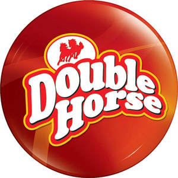

Trade Mark Journal No.2025/013 28 March 2025
UK00004171330 10 March 2025 (29,30)

- Class 29
- Edible oils and fats; Sesame oil; Coconut oil; Coconut flakes; Desiccated coconut; Raisins; Pickles; Garlic paste; Vegetable pastes; Canned pulses; Dried pulses; Processed Pulses; Fruit chips; Potato chips; Fruit-based snack food; Prepared dishes consisting principally of meat; Prepared vegetable dishes; Ghee; Dairy products and dairy substitutes; Food preparations predominantly of milk; Beverages consisting primarily of milk; Dairy desserts; Milk products; Milk-based beverages; Cooked fruits; Processed fruits; Dried fruit products; Dried fruit-based snacks; Preserved fruits; Frozen fruits; Fruit purees; Dried fruit; Vegetable-based snack foods; Vegetables, cooked; Dried vegetables; Preserved vegetables; Frozen vegetables; Soup mixes; Preparations for making soup; Soup powders; Instant soup; Soups; Vegetable salads; Fruit salads; Jams; Vegetable jellies; Fruit jellies; Processed meat products; Meat and meat products; Prepared meat; Meat-based snack food; Prepared meals consisting primarily of meat; Fish; Fish meal for human consumption; Food products made from fish; Prepared meals consisting primarily of poultry; Game, not live; Pre-packaged dinners consisting primarily of game; Eggs; Prepared meals containing [principally] eggs; Flavoured nuts; Processed nuts; Snack mixes consisting of dehydrated fruit and processed nuts.
- Class 30
- Coffee; Artificial coffee; Cocoa; Rice; Sago; Tapioca; Flour; Preparations made from cereals; Bread; Pastries; Confectionery; Edible ices; Sugar; Honey; Treacle; Yeast; Baking powder; Salt; Mustard; Vinegar; Sauces [condiments]; Spices; Biscuits; Cookies; Buns; Cakes; Sandwiches; Chocolate; Coffee-based beverages; Ice cream; Crackers; Rusks; Farinaceous foods; Dough; Cereal-based snack food; Curry spices; Aromatic preparations for food; Flavourings, other than essential oils, for foods; Seasonings; Salts, seasonings, flavourings and condiments; Rice-based prepared meals; Rice-based snack food.
MANJILAS FOOD TECH PRIVATE LIMITED
Representative: Trama Legal s.r.o.